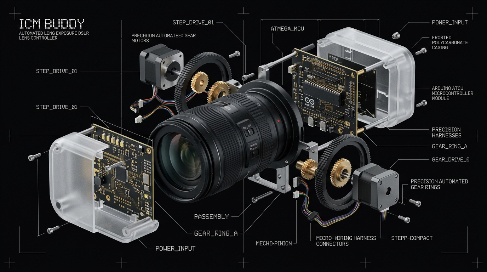

QUIZ • SYSTEM
Potionality
A reflective personality test calculating dominant energetic brews across eight elemental forces with dynamic score weighting.
Computer Engineer specializing in Embedded C/C++ Firmware, AI Learning Systems, and High-Concurrency Architecture. Crafting tactile hardware controllers and interactive digital experiences.
Developed to solve the consistency challenge in Intentional Camera Movement (ICM) photography. This system automates camera lens zoom and focus movements during slow exposure captures through precise motorized gearing.

Powered by an Arduino AtMega microcontroller programmed in bare-metal C/C++. The primary engineering hurdle was firmware optimization: squeezing complex step-interpolation and acceleration profiles into highly constrained microcontroller memory while preserving real-time responsiveness.
Developed under Project Lyon 2.0 in partnership with Google Cloud and specialist partner OniGroup. Deployed to assist over 6,000 incoming university freshmen transitioning to university life during the virtual Freshmen Orientation.

Engineered natural language understanding algorithms and onboarding decision flows. Guided students dynamically through NTU Smart Campus resources, class schedules, and interactive virtual events.
What began in 2013 as an exploration of server infrastructure evolved into the Probow Network — a high-performance distributed multiplayer game network that peaked at 400 concurrent active players.
As the sole systems programmer, architected custom Java plugins using Object-Oriented Design Principles (OODP), optimized low-latency networking, and managed database state synchronization, server hardware, and sponsor operations.
Nine production web applications shipped to GitHub Pages. Spanning reactive quizzes, browser game engines, branching stories, and content systems built with modern web technologies.
A reflective personality test calculating dominant energetic brews across eight elemental forces with dynamic score weighting.
Find your class. Roll for identity. Forge your destiny. An algorithmic RPG character questionnaire with tactile animations.
A personal web novel reader engine featuring markdown frontmatter, chapter pagination, docx import tools, and image variant optimization.
A recreation of the classic base defense and evolutionary warfare strategy game, engineered for zero-dependency browser play.
Bannerlord-inspired tactical realm simulation with dynamic army recruitments, territorial disputes, and browser-based unit combat.
Classic grid-based polyomino puzzle game featuring precise lock delays, wall kicks, ghost pieces, and dynamic level acceleration.
Interactive 5-letter daily vocabulary guessing challenge with letter state evaluation, statistics tracking, and flip tile animations.
A browser-based branching narrative engine where conversational choices dynamically adjust trust, tension, and narrative outcomes.
"Wanted an MMO but got Touhou instead." A high-octane bullet-hell browser action game with canvas-driven particle rendering.
Hands-on mastery across low-level microcontroller systems, artificial intelligence algorithms, backend distributed services, and modern browser runtimes.
Deep experience in embedded systems, Arduino AtMega microcontrollers, and low-level data structures. Specialized in aggressive memory footprint reduction and clock-cycle optimization.
Learned during University engineering curriculum for Data Science and Machine Learning. Built athlete performance correlation algorithms, AI models, and 2D games with Pygame.
Developed since secondary school for custom Minecraft server plugins and scaled to large multiplayer networks. Mastered Object-Oriented Design Principles (OODP) and concurrency models.
Engineers responsive state machines, WebGL 3D canvas renderers (Three.js), modern game loops, and DOM interactions for browser deployment on GitHub Pages.
Specializing in CSS scroll-driven animations, glassmorphism, responsive grid architecture, fluid typography, and accessible brutalist UI design systems.
Type terminal commands or click the shortcut buttons below to inspect technical credentials, query projects, and examine qualifications.
Graduated from Nanyang Technological University (NTU) in May 2022 with a Bachelor's Degree in Computer Engineering, specialized in Artificial Intelligence and Cyber Security. Driven by first-principles problem solving, high-efficiency logic, and engineering software/hardware that makes a real-world difference.
Open to high-impact software & hardware engineering roles, systems architecture, and technical collaborations.